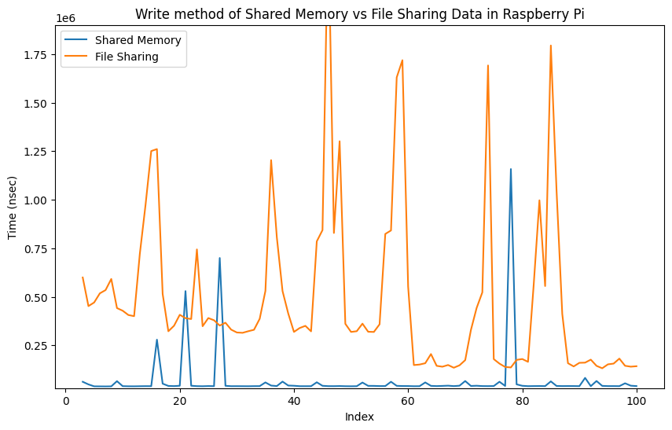

Department Of Biomedical Informatics, Emory University | GSoC'23
This page demonstrates the project work titled "A Real-Time Computing Support for Concore" under Google Summer of Code, 2023 Emory BMI.
- Project Title: A real-time computing support for Concore.
- Contributor: Shivang Vijay
- Email: shivangvijay@gmail.com
Overview
Developed a shared memory Inter-Process Communication (IPC) between processes within Concore to achieve real-time computing capabilities. Additionally, generated a comparative report between shared memory IPC and file-based IPC for information sharing. Moreover, successfully set up Concore on a Raspberry Pi with Real-Time Clock (RTC) integration.
Below video shows the Concore setup on a Raspberry Pi with an RTC module, and there is no internet connection. Follow Instructions to set up Raspberry Pi with RTC.
Below video shows the Concore setup on a Raspberry Pi using VNC with an internet connection.
Contributions
| Github Code Link | Description |
|---|---|
| https://github.com/ControlCore-Project/concore.hpp | Implementation of Shared Memory |
| https://github.com/ControlCore-Project/documentation/raspberrypi.rst | Adding RTC Module to Raspberry Pi |
| https://github.com/ControlCore-Project/documentation/sharedmemory.rst | Shared Memory communication in Concore |
| https://github.com/ControlCore-Project/documentation/CodeDocumentation.rst | Code Documentation of Concore.hpp |
| https://github.com/ControlCore-Project/Benchtest_between_Shared_Memory_and_File_Method_in_Laptop.ipynb | Benchtest between Shared Memory and File Method in Laptop |
| https://github.com/ControlCore-Project/Benchtest_between_Shared_Memory_and_File_Method_in_Raspberry_Pi.ipynb | Benchtest between Shared Memory and File Method in Raspberry Pi |
Comparison between Shared Memory and File Method in Laptop
Code Detailed ReportResult:-
| Graph | Description |
|---|---|
|
|
|
|
|
|
|
Comparison between Shared Memory and File Method in Raspberry Pi
Report generated in Raspberry Pi 3 Model B+
Code Detailed ReportResult:-
| Graph | Description |
|---|---|

|
|
|  |
|
|
|
|
Conclusion
My implementation of shared memory demonstrates superior performance based on the analysis of the presented graphs. The results obtained from the graphs, derived from approximately 100 iterations, reveal the effectiveness of the shared memory approach. Notably, as the number of iterations increases, the advantages of the shared memory implementation become even more pronounced, showcasing its potential to provide nearly real-time computing capabilities for Concore.